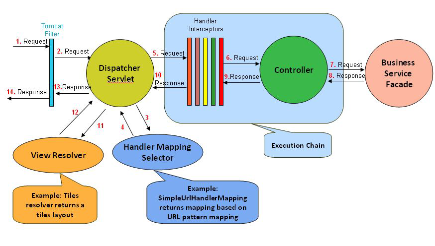
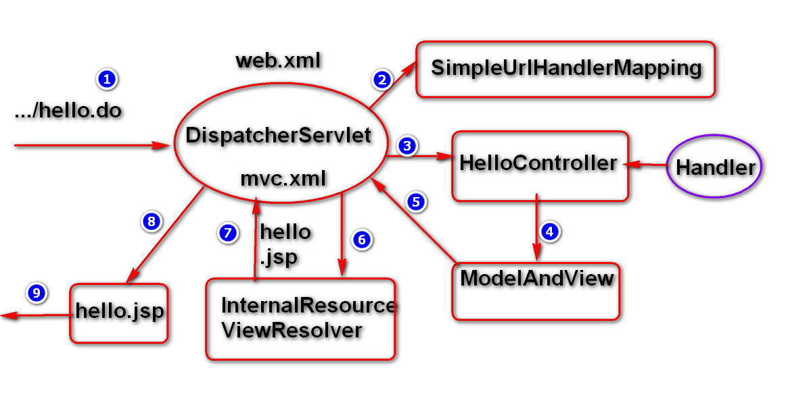

04_spring_MVC_basic
Jan 19, 2018
目录
- Spring MVC
- Spring MVC 的基本实现
- Spring MVC 请求处理
- Spring MVC 响应处理
- Spring MVC 处理流程
Spring MVC
- 前提: Spring 框架在企业级应用中, 解决了一些细节问题. 如: 参数获取和校验, 值的注入, 响应方式和数据格式的转换等.
- 传统MVC: 优势: 结构层次清晰,可读性可维护性较好; 劣势: 参数获取,类型转换,流程调用较复杂.
- 现代MVC 框架: spring mvc, struts2, …
- Spring MVC: (底层核心架构图)

DispatcherServlet: 前端控制器, 处理请求的入口
HandlerMapping: 映射器, 管理url和controller的映射关系
Controller: 后端控制器, 处理请求的控制逻辑
ModelAndView: 模型, 封装业务处理的结果和视图
ViewResovler: 视图解析器, 解析对应的视图(匹配前缀+view+匹配后缀)
Spring MVC 的基本实现
- 创建maven web项目, 添加项目依赖
- 配置web.xml文件, 创建前端控制器DispatcherServlet, 配置相关
- 创建后端控制器类Controller
- 添加相关页面
- 配置spring配置文件, 配置应用组件
- 部署和测试
基于xml方式实现:
创建maven web项目, pom.xml添加依赖
1
2
3
4
5
6
7<dependencies>
<dependency>
<groupId>org.springframework</groupId>
<artifactId>spring-webmvc</artifactId>
<version>4.3.9.RELEASE</version>
</dependency>
<dependencies>配置web.xml文件, 配置DispatcherServlet
1
2
3
4
5
6
7
8
9
10
11
12
13
14
15
16
17//前置控制器一般需要在服务器启动时, 初始化
<servlet>
<servlet-name>dispatcherServlet</servlet-name>
<servlet-class>org.springframework.web.servlet.DispatcherServlet</servlet-class>
<!--serlvet初始化加载配置-->
<init-param>
<param-name>contextConfigLocation</param-name>
<param-value>classpath:spring-mvc.xml</param-value>
</init-param>
<!--启动时加载该servlet-->
<load-on-startup>1</load-on-startup>
</servlet>
<servlet-mapping>
<servlet-name>dispatcherServlet</servlet-name>
<url-pattern>*.do</url-pattern>
</servlet-mapping>创建后端控制器类Controller, 实现Controller接口, 重写方法
1
2
3
4
5
6
7
8
9
10
11//ModelAndView 为模型与视图对象, 内置map对象, 封装业务数据和视图名
//ModelAndView 构造方法传递视图名
//ModelAndView addObject()存储数据
//返回对象, 自动被spring mvc 存储到请求作用域, 在对应视图中获取对应数值.
public class HelloController implements Controller{
public ModelAndView handleRequest(HttpServletRequest request) {
ModelAndView mv=new ModelAndView("hello");
mv.addObject("message","helloworld");
return mv;
}
}添加相关视图, /WEB-INF/pages/xxx.jsp文件
1
2
3
4
5…
<body>
<h1>${message}</h1>
</body>
…配置spring配置文件, /resource目录下spring-mvc.xml文件添加:
??如何快速生成spring 配置文件,而不是复制上一个项目的??1
2
3
4
5
6
7
8
9
10
11
12
13
14
15
16
17
18
19
20<!--开启自动扫描-->
<context:component-scan base-package="cn.tinytiny"/>
<!--开启mvc注解-->
<mvc:annotation-driven/>
<!--后端controller-->
<bean id="helloController" class="cn.tinytiny.controller.HelloController"/>
<!--配置handlerMapping, 处理 url到controller的映射-->
<bean class="org.springframework.web.servlet.handler.SimpleUrlHandlerMapping">
<property name="mappings">
<props>
<prop key="/hello.do">helloController</prop>
</props>
</property>
</bean>
<!--配置viewResolver-->
<bean id="viewResolver" class="org.springframework.web.servlet.view.InternalResourceViewResolver">
<property name="prefix" value="/WEB-INF/pages/"/>
<property name="suffix" value=".jsp"/>
</bean>部署和测试
启动tomacat服务器, 浏览器输入url访问业务
运行原理:

注解方式实现:
创建 maven web项目, 添加依赖(同上)
配置web.xml文件, 配置DispatcherServlet
创建后端控制器类Controller, 添加@Controller注解和@RequestMapping注解
1
2
3
4
5
6
7
8
9
10
11
12//@RequestMapping注解定义url到controller具体方法的映射
@Controller
@RequestMapping("/")
public class AnnotationHelloController {
@RequestMapping("doSayHello")
public String doSayHello() {
ModelAndView mv=new ModelAndView("hello");
mv.addObject("message", "helloworld");
return "hello";
}
}添加相关视图, /WEB-INF/pages/xxx.jsp文件(同上)
配置spring配置文件, /resource目录下spring-mvc.xml文件添加:
1
2
3
4
5
6
7
8
9
10<!-- 配置组件扫描 -->
<context:component-scan base-package="com.company"/>
<!—启用MVC注解扫描 -->
<mvc:annotation-driven/>
<!-- 配置视图解析器 -->
<bean id="viewResolver"
class="org.springframework.web.servlet.view.InternalResourceViewResolver">
<property name="prefix" value="/WEB-INF/pages/"/>
<property name="suffix" value=".jsp"/>
</bean>部署和测试
启动tomacat服务器, 浏览器输入url访问业务
Spring MVC 请求处理
请求路径映射
1
2
3
4
5
6
7
8
9@RequestMapping 注解定义映射路径.(应用于类定义或方法定义处)
//多个url可以映射到同一个controller的处理方法
@RequestMapping(value={"/doSayHello","/sys/doSayBye"})
//REST 即表述性状态传递(Representational State Transfer): 软件架构编码风格, 基于网络应用进行设计和开发的编码方式.
@RequestMapping("/msg/{xxx}") //匹配url:/msg/abc 或/msg/abcdef等
@RequestMapping("/msg/{id}/create") //匹配url:/msg/1/create
@RequestMapping("/msg/{mId}/topics/{tId}") //匹配url:/msg/1/topics/12
@PathVariable 可以提取URI模板模式中的{xxx}中的xxx变量请求方法映射
1
2
3@RequestMapping method属性指定具体的请求方式或多种请求方式
@RequestMapping(value="doSaveObj", method=RequestMethod.POST)
@RequestMapping(value="doSaveObj", method={RequestMethod.POST,RequestMethod.GET)请求参数映射
1
2
3
4
5
6
7
8
9
10
11
12
13
14
15
16
17
18
19
20
21
22
23
24
25
26
27
28
29
30
31
32
33
34
35
36
37
38
39
40
41
42
43
44
45
46
47
48
49
50
51
52
53
54//使用Servlet API中对象, 获取参数数据, 如HttpServletRequest,HttpSession等
//@ResponseBody注解作用：该注解作用于将Controller的方法返回的对象，通过适当的HttpMessageConverter转换为指定格式后，写入到Response对象的body数据区，使用情况：返回的数据不是Html标签的页面，而是其他数据格式的数据时，（如Json、xml，普通文本等）使用.
@RequestMapping(value="request",method=RequestMethod.GET)
@ResponseBody
public String withRequest(HttpServletRequest request){
System.out.println(request.getRequestURI());
return "value: "+request.getParameter("gid");
}
//使用直接量, 接收参数数据, 但参数变量类型必需为对象类型
//@RequestParam 注解用于接收请求参数中名字为foo的参数值，假如请求参数名与方法中的参数名一致，@RequestParam注解可以省略。假如不一致则可以使用@RequestParam注解定义新的参数名直接接收页面数据，然后传递给方法名
//属性required=false表示，该参数可以不存在. 若为true，参数不存在时会抛出异常.
@RequestMapping(value="param",method=RequestMethod.GET)
@ResponseBody
public String withParam(@RequestParam String foo) {
return "Obtained 'foo' query parameter value '" + foo + "'";
}
@RequestMapping(value="param", method=RequestMethod.GET)
@ResponseBody
public String withParam(
@RequestParam(value="param1",required=false) String foo) {
return "Obtained 'foo' query parameter value '" + foo + "'";
}
//使用Java Bean对象, 接收多个参数数据, 简化多参数变量定义
//bean中需要有与参数名对应的set方法
@RequestMapping(value="group",method=RequestMethod.GET)
@ResponseBody
public String withParamGroup(Message bean) {
return "Obtained parameter group " + bean;
}
//使用Rest url中的数据, 将动态url中的可变参数直接注入方法对应参数中去
//@PathVariable注解指定参数变量var获取请求url中{var}数据
@RequestMapping(value="path/{var}",method=RequestMethod.GET)
@ResponseBody
public String withPathVariable(@PathVariable String var) {
return "value: " + var;
}
//使用请求头数据, 获取请求头中的数据绑定到方法参数中去
//@RequestHeader即可将请求头的属性值绑定到处理方法的入参中
//当应用中要获取请求中所有数据时可以在请求方法中定义一个HttpEntity<String>参数，通过此参数获取请求头及请求体中数据.
@RequestMapping(value="header", method=RequestMethod.GET)
@ResponseBody
public String withHeader(@RequestHeader String Accept) {
return "value: " + Accept;
}
@RequestMapping(value="entity", method=RequestMethod.POST)
public @ResponseBody String withEntity(HttpEntity<String> entity) {
return "request body: " + entity.getBody() + "headers: " + entity.getHeaders();
}
Spring MVC 响应处理
响应数据的封装
1
2
3
4
5
6
7
8
9
10
11
12
13
14
15
16
17
18
19
20
21
22
23
24
25
26
27
28
29
30
31//借助ModelAndrView对象封装.
//ModelAndView对象由Spring创建, 当服务器对响应数据封装时, 将数据存储到ModelAndView对象的Modelmap类型的属性中
@RequestMapping("doModelAndView")
public ModelAndView doModelAndView(ModelAndView mv) {
//ModelAndView mv=new ModelAndView();
mv.addObject("data", "model and view");
mv.setViewName("back");
return mv;
}
//借助Model对象封装.
//当返回具体View时，系统底层会自动将model对象存储到request作用域
@RequestMapping("doModel")
public String doModel(Model model) {
model.addAttribute("data", "modal");
return "back";
}
//借助Map对象封装.
//若使用map对象封装数据, 可以直接采用model对象封装
@RequestMapping("doMap")
public String doMap(Map<String,Object> map) {
map.put("data", "map..");
return "back";
}
//使用@RequestParam注解, 可以通过map接收页面参数
@RequestMapping("doMap")
public String doMap(@RequestParam Map<String,Object> map) {
map.put("data", "map..");
return "back";
}响应数据的转换
1
2
3
4
5
6
7
8
9
10
11
12
13
14
15
16
17
18
19
20
21
22
23
24
25
26
27
28
29
30
31
32
33
34
35
36
37
38
39
40
41
42
43
44
45
46
47
48
49
50
51
52
53
54
55
56
57
58
59
60
61
62
63
64
65
66
67
68
69
70
71
72
73
74
75
76
77
78
79
80
81
82
83
84
85
86
87
88
89
90
91
92
93
94
95
96
97
98
99
100
101
102
103
104
105
106//JSON: JavaScript Object Notation 轻量级数据交换格式, 用于客户端和服务端的数据传输.
//客户端操作json
//JSON.parse() json格式字符串>>json对象
//JSON.stringify() json对象>>json格式字符串
//json对象
var json = {id:666,name:'tiny',age:25}
var json2 = [{id:666,name:'tiny',age:25},{id:777,name:'tiny2',age:24}]
var x = json.id;
var y = json2[1].id;
JSON.stringify(json);
JSON.parse('[{"id":666,"name":"tiny","age":25},{"id":777,"name":"tiny2","age":24}]');
//服务端操作json
//通常服务器端返回响应数据直接转换成json格式字符串, 客户端再将字符串转换成json对象, 最后取值.
//添加第三方JSON API库(jackson/fastjson),实现java对象和JSON字符串的转换
<dependency>
<groupId>com.fasterxml.jackson.core</groupId>
<artifactId>jackson-databind</artifactId>
<version>2.8.5</version>
</dependency>
或
<dependency>
<groupId>com.alibaba</groupId>
<artifactId>fastjson</artifactId>
<version>1.2.44</version>
</dependency>
//jackson
//对象转换器(jackson)
ObjectMapper om=new ObjectMapper();
//map/list/Object>>json字符串
String s1=om.writeValueAsString(map);
System.out.println(s1
//fastjson
//map/list/Object>>json字符串
String s1=JSON.toJSONString(map);
System.out.println(s1);
//json字符串>>map/list/Object
Map<?,?> map2 = JSON.parseObject(s1, Map.class);
System.out.println(map2);
//Spring 集成jackson
- 添加依赖
- 创建controller, 添加对应方法, 返回map对象(spring底层会直接访问jackson api将对象转换为字符串)
//map>>json
@RequestMapping("doMap")
@ResponseBody
public Map<String,Object> doMap(){
Map<String,Object> map=
new HashMap<>();
map.put("id", 100);
map.put("name", "AAA");
return map;
}
//javaBean>>json
@RequestMapping("doUser")
@ResponseBody
public SysUser doUser(){
SysUser user=new SysUser();
user.setId(100);
user.setUsername("CCC");
user.setPassword("123456");
return user;
}
//list>>json
@RequestMapping("doList")
@ResponseBody
public List<SysUser> doList(){
List<SysUser> list=new ArrayList<>();
SysUser user=new SysUser();
user.setId(100);
user.setUsername("CCC");
user.setPassword("123456");
list.add(user);
user=new SysUser();
user.setId(200);
user.setUsername("DDD");
user.setPassword("123");
list.add(user);
return list;
}
//Spring 集成fastjson
- 添加依赖
- 创建controller, 添加相应方法, 返回map对象(手动代码转换json)
@RequestMapping("doFastMap")
@ResponseBody
public String doFastMap(){
Map<String,Object> map=
new HashMap<>();
map.put("id", 100);
map.put("name", "AAA");
return JSON.toJSONString(map);
}
或者spring配置如下:
<!--开启自动扫描-->
<context:component-scan base-package="cn.tinytiny"/>
<!--开启mvc注解-->
<mvc:annotation-driven>
<mvc:message-converters>
<bean class="com.alibaba.fastjson.support.spring.FastJsonHttpMessageConverter"/>
</mvc:message-converters>
</mvc:annotation-driven>
Spring MVC 处理流程
Spring工作流程描述
- 用户向服务器发送请求, 请求被Spring 前端控制器DispatcherServlet捕获;
- DispatcherServlet对请求URL进行解析, 得到请求资源标识符（URI）。然后根据该URI, 调用HandlerMapping获得该Handler配置的所有相关的对象(包括Handler对象以及Handler对象对应的拦截器), 最后以HandlerExecutionChain对象的形式返回;
- DispatcherServlet 根据获得的Handler，选择一个合适的HandlerAdapter。(附注：如果成功获得HandlerAdapter后，此时将开始执行拦截器的preHandler(…)方法)
- 提取Request中的模型数据，填充Handler入参，开始执行Handler（Controller). 在填充Handler的入参过程中，根据你的配置，Spring将帮你做一些额外的工作:
- HttpMessageConveter: 将请求消息（如Json、xml等数据）转换成一个对象, 将对象转换为指定的响应信息;
- 数据转换: 对请求消息进行数据转换。如String转换成Integer、Double等;
- 数据格式化: 对请求消息进行数据格式化。 如将字符串转换成格式化数字或格式化日期等;
- Handler执行完成后，向DispatcherServlet 返回一个ModelAndView对象；
- 根据返回的ModelAndView，选择一个适合的ViewResolver(必须是已经注册到Spring容器中的ViewResolver)返回给DispatcherServlet;
- ViewResolver 结合Model和View, 来渲染视图;
- 将渲染结果返回给客户端.